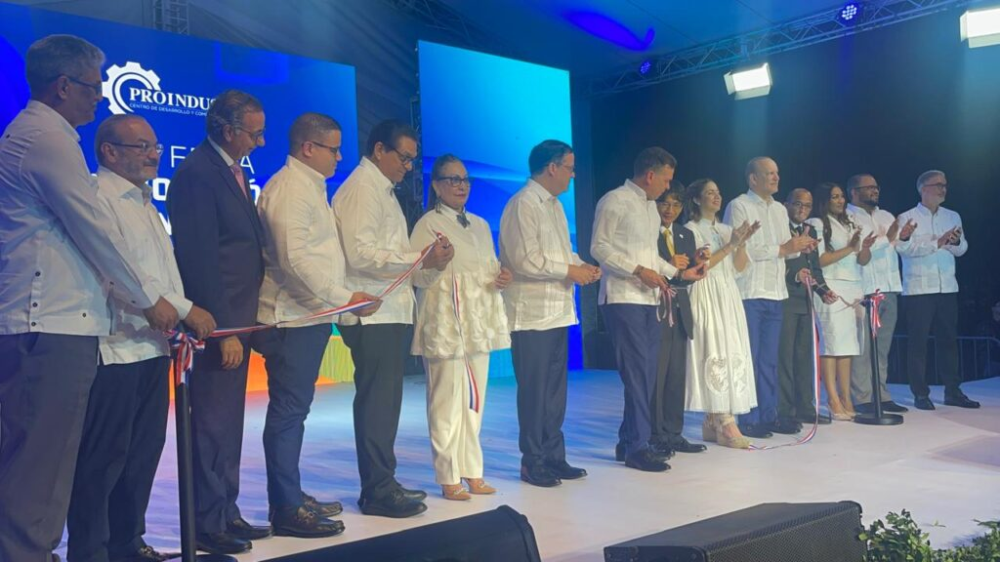
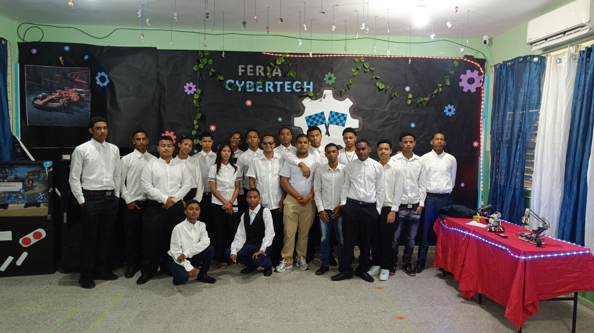
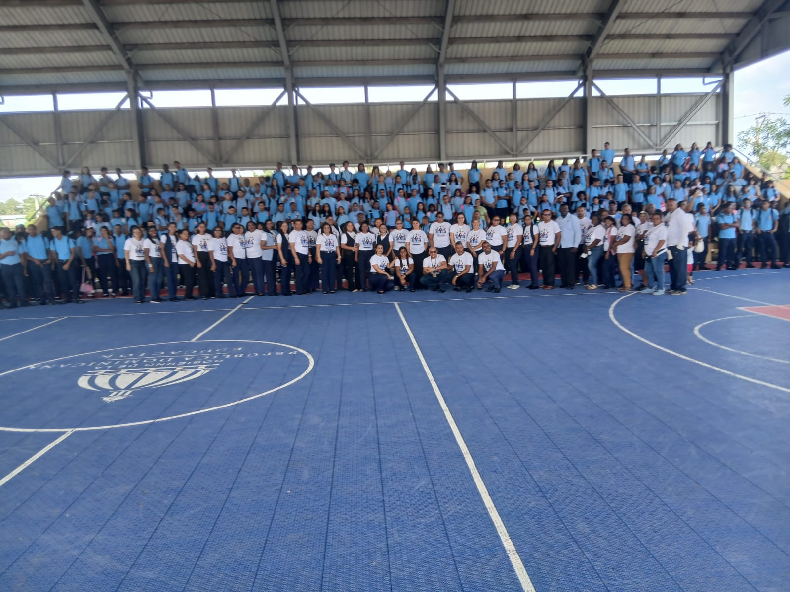

EDUCACIÓN · INNOVACIÓN · VALORES
Formando jóvenes para transformar el futuro
Una comunidad educativa comprometida con la formación técnica, el pensamiento crítico y el desarrollo integral.
Conoce el centro563Estudiantes
33Docentes
4Especialidades técnicas
2016Año de inauguración
NUESTRO CENTRO
Educación que prepara para la vida
El Politécnico Prof. Plinio Martínez promueve una formación integral que combina conocimientos académicos, competencias técnicas, valores y participación comunitaria.
Desde Cienfuegos, Santiago Oeste, acompañamos a nuestros estudiantes en la construcción de sus proyectos de vida y en su preparación para el trabajo y los estudios superiores.
Conocer másMENSAJE DEL DIRECTOR
Comprometidos con una educación técnica de calidad
“Nuestro compromiso es formar jóvenes íntegros, críticos y competentes, preparados para enfrentar los desafíos del mundo actual.”
Eduardo Alcántara
Director del centro
OFERTA ACADÉMICA
Especialidades técnicas
Programas orientados al desarrollo de competencias para el trabajo, el emprendimiento y la continuidad educativa.
Auxiliar de Farmacia
Ver especialidad →Comercio y Mercadeo
Ver especialidad →Gestión Administrativa y Tributaria
Ver especialidad →ACTUALIDAD
Noticias y actividades

Visita educativa
Visita a la Feria de Proindustria
Estudiantes participaron en una experiencia vinculada con la innovación y el desarrollo productivo.

Formación técnica
Feria Técnica
Presentación de proyectos de ciencias, informática, farmacia y emprendimiento.

Inicio del Año Escolar 2026-2027
El Politécnico Plinio Martínez dio inicio al año escolar 2026-2027 con entusiasmo, alegría y el compromiso de continuar ofreciendo una educación técnica de calidad, orientada a la formación integral de sus estudiantes.
ACCESOS DIGITALES
Portales de la comunidad educativa
Recursos, avisos y documentos organizados para estudiantes y docentes.